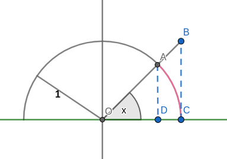

3.4 Derivatives of Trigonometric Functions
Two special Limits
Theorem 3.11 Trigonometric Limits
lim x → 0 sin x x = 1 \dlim_{x \to 0}{\dfrac{\sin x}{x}} = 1 x → 0 lim x sin x = 1 lim x → 0 cos x − 1 x = 0 \dlim_{x \to 0}{\dfrac{\cos x -1}{x}} = 0 x → 0 lim x cos x − 1 = 0
Proof lim x → 0 sin x x = 1 \dlim_{x \to 0}{\dfrac{\sin x}{x}} = 1 x → 0 lim x sin x = 1
△ O A D < O A C undefined < △ O B C 1 2 O D ⋅ A D < 1 2 O C 2 ⋅ x < 1 2 O C ⋅ B C cos x ⋅ sin x < 1 2 ⋅ x < 1 ⋅ tan x cos x < x sin x < 1 cos x 1 cos x > sin x x > cos x \begin{aligned}
\triangle OAD&< \overgroup{OAC} < \triangle OBC \\
\frac{1}{2} OD \cdot AD&< \frac{1}{2} OC^2 \cdot x < \frac{1}{2}OC \cdot BC \\
\cos x \cdot \sin x &< 1^2 \cdot x< 1 \cdot \tan x \\
\cos x &< \frac{x}{\sin x} < \frac{1}{\cos x} \\
\frac{1}{\cos x} &> \frac{\sin x}{x} > \cos x
\end{aligned}
△ O A D 2 1 O D ⋅ A D cos x ⋅ sin x cos x cos x 1 < O A C < △ O B C < 2 1 O C 2 ⋅ x < 2 1 O C ⋅ B C < 1 2 ⋅ x < 1 ⋅ tan x < sin x x < cos x 1 > x sin x > cos x
Because lim x → 0 cos x = 1 = lim x → 0 1 cos x \dlim_{x \to 0}\cos x = 1 = \dlim_{x \to 0}\dfrac{1}{\cos x} x → 0 lim cos x = 1 = x → 0 lim cos x 1 lim x → 0 sin x x = 1 \dlim_{x \to 0}{\dfrac{\sin x}{x}} = 1 x → 0 lim x sin x = 1
Proof lim x → 0 cos x − 1 x = 0 \dlim_{x \to 0}{\dfrac{\cos x -1}{x}} = 0 x → 0 lim x cos x − 1 = 0
lim x → 0 cos x − 1 x = lim x → 0 ( cos x − 1 x ⋅ cos x + 1 cos x + 1 ) = lim x → 0 cos 2 x − 1 x ( cos x + 1 ) = lim x → 0 sin 2 x ( cos x + 1 ) = lim x → 0 sin x x ⋅ lim x → 0 sin x cos x + 1 = 1 × 0 1 + 1 = 0 \begin{aligned}
\lim_{x \to 0}{\frac{\cos x -1}{x}} &= \lim_{x \to 0}({\frac{\cos x -1}{x}} \cdot \frac{\cos x + 1}{\cos x +1}) \\
&= \lim_{x \to 0}\frac{\cos^2 x - 1}{x(\cos x +1)} \\
&= \lim_{x \to 0}\frac{\sin^2}{x(\cos x + 1)} \\
&= \lim_{x \to 0}\frac{\sin x}{x} \cdot \lim_{x \to 0}\frac{\sin x}{\cos x + 1} \\
&= 1 \times \frac{0}{1+1} = 0
\end{aligned}
x → 0 lim x cos x − 1 = x → 0 lim ( x cos x − 1 ⋅ cos x + 1 cos x + 1 ) = x → 0 lim x ( cos x + 1 ) cos 2 x − 1 = x → 0 lim x ( cos x + 1 ) sin 2 = x → 0 lim x sin x ⋅ x → 0 lim cos x + 1 sin x = 1 × 1 + 1 0 = 0
Example 1
Calculating trigonometric limits .lim x → 0 sin 4 x x \dlim_{x \to 0}{\dfrac{\sin 4x}{x}} x → 0 lim x sin 4 x lim x → 0 sin 3 x sin 5 x \dlim_{x \to 0}{\dfrac{\sin 3x}{\sin 5x}} x → 0 lim sin 5 x sin 3 x
Solution
a. To use the fact that lim x → 0 sin x x = 1 \dlim_{x \to 0}{\frac{\sin x}{x}} = 1 x → 0 lim x sin x = 1 sin 4 x x \dfrac{\sin 4x}{x} x sin 4 x
lim x → 0 sin 4 x x = lim x → 0 4 sin 4 x 4 x Multiply and divide by 4. = 4 lim x → 0 sin 4 x 4 x Factor out 4. = 4 lim t → 0 sin t t Let t=4x; t->0 as x->0. = 4 ( 1 ) = 4 Theorem 3.11 \begin{aligned}
\lim_{x \to 0}{\frac{\sin 4x}{x}}
&= \lim_{x \to 0}{\frac{4\sin 4x}{4x}} &\text{Multiply and divide by 4.} \\
&= 4\lim_{x \to 0}{\frac{\sin 4x}{4x}} &\text{Factor out 4.} \\
&= 4\lim_{t \to 0}{\frac{\sin t}{t}} &\text{Let t=4x; t->0 as x->0.} \\
&= 4(1) = 4 &\text{Theorem 3.11}
\end{aligned}
x → 0 lim x sin 4 x = x → 0 lim 4 x 4 sin 4 x = 4 x → 0 lim 4 x sin 4 x = 4 t → 0 lim t sin t = 4 ( 1 ) = 4 Multiply and divide by 4. Factor out 4. Let t=4x; t->0 as x->0. Theorem 3.11
b. The first step is to divide the numerator and denominator of sin 3 x sin 5 x \dfrac{\sin 3x}{\sin 5x} sin 5 x sin 3 x x x x
sin 3 x sin 5 x = ( sin 3 x ) / x ( sin 5 x ) / x \frac{\sin 3x}{\sin 5x} = \frac{(\sin 3x)/x}{(\sin 5x)/x}
sin 5 x sin 3 x = ( sin 5 x ) / x ( sin 3 x ) / x
As in part (a), we now divide and multiply sin 3 x x \frac{\sin 3x}{x} x sin 3 x 3 3 3 sin 3 x x \frac{\sin 3x}{x} x sin 3 x 5 5 5 t = 3 x t=3x t = 3 x u = 5 x u=5x u = 5 x t → 0 t \to 0 t → 0 u → 0 u \to 0 u → 0 x → 0 x \to 0 x → 0
lim x → 0 sin 3 x sin 5 x = lim x → 0 3 sin 3 x 3 x 5 sin 5 x 5 x = 3 5 ⋅ lim t → 0 sin t t lim u → 0 sin u u t=3x in numerator and u=5x in denominator. = 3 5 ⋅ 1 1 = 3 5 \begin{aligned}
\lim_{x \to 0}{\frac{\sin 3x}{\sin 5x}}
&= \lim_{x \to 0}{\frac{\frac{3\sin 3x}{3x}}{\frac{5\sin 5x}{5x}}} \\
&= \frac{3}{5} \cdot {\frac{\dlim_{t \to 0}{\frac{\sin t}{t}}}{\dlim_{u \to 0}{{\frac{\sin u}{u}}}}} &\text{t=3x in numerator and u=5x in denominator.} \\
& = \frac{3}{5}\cdot\frac{1}{1} =\frac{3}{5}
\end{aligned}
x → 0 lim sin 5 x sin 3 x = x → 0 lim 5 x 5 sin 5 x 3 x 3 sin 3 x = 5 3 ⋅ u → 0 lim u sin u t → 0 lim t sin t = 5 3 ⋅ 1 1 = 5 3 t=3x in numerator and u=5x in denominator.
Derivatives of Sine and Cosine Functions
Theorem 3.12 Derivatives of Sine and Cosine
d d x ( sin x ) = cos x \dfrac{d}{dx}(\sin x) = \cos x d x d ( sin x ) = cos x d d x ( cos x ) = − sin x \dfrac{d}{dx}(\cos x) = -\sin x d x d ( cos x ) = − sin x
Proof
f ′ ( x ) = lim h → 0 sin ( x + h ) − sin x h Definition of the derivative. = lim h → 0 sin x cos h + cos x sin h − sin x h Sine addition identity. = lim h → 0 sin x ( cos h − 1 ) + cos x sin h h = lim h → 0 sin x ( cos h − 1 ) h + lim h → 0 cos x sin h h Theorm 2.3. = sin x [ lim h → 0 cos h − 1 h ] + cos x [ lim h → 0 sin h h ] Both sinx and cosx are independent of h. = ( sin x ) ( 0 ) + ( cos x ) ( 1 ) Theorm 3.11. = cos x \begin{aligned}
f'(x) &= \lim_{h \to 0}{\frac{\sin(x+h) - \sin x}{h}} &\text{Definition of the derivative.}\\
&= \lim_{h \to 0}{\frac{\sin x\cos h + \cos x\sin h - \sin x}{h}} &\text{Sine addition identity.} \\
&= \lim_{h \to 0}{\frac{\sin x(\cos h - 1) + \cos x\sin h}{h}} \\
&= \lim_{h \to 0}{\frac{\sin x(\cos h - 1)}{h}} + \lim_{h \to 0}{\frac{\cos x\sin h}{h}} &\text{Theorm 2.3.}\\
&= \sin x \lb\bf{\lim_{h \to 0}{\frac{\cos h - 1}{h}}}\rb + \cos x\lb\bf{\lim_{h \to 0}{\frac{\sin h}{h}}}\rb &\text{Both sinx and cosx are independent of h.}\\
&= (\sin x)(0) + (\cos x)(1) &\text{Theorm 3.11.}\\
&= \cos x
\end{aligned}
f ′ ( x ) = h → 0 lim h sin ( x + h ) − sin x = h → 0 lim h sin x cos h + cos x sin h − sin x = h → 0 lim h sin x ( cos h − 1 ) + cos x sin h = h → 0 lim h sin x ( cos h − 1 ) + h → 0 lim h cos x sin h = sin x [ h → 0 lim h cos h − 1 ] + cos x [ h → 0 lim h sin h ] = ( sin x ) ( 0 ) + ( cos x ) ( 1 ) = cos x Definition of the derivative. Sine addition identity. Theorm 2.3. Both sinx and cosx are independent of h. Theorm 3.11.
We have proved the import result that d d x ( sin x ) = cos x \dfrac{d}{dx}(\sin x) = \cos x d x d ( sin x ) = cos x d d x ( cos x ) = − sin x \dfrac{d}{dx}(\cos x) = -\sin x d x d ( cos x ) = − sin x
Example 2
Derivatives involving trigonometric functions y = e 2 x cos x y=e^{2x}\cos x y = e 2 x cos x y = sin x − x cos x y=\sin x - x\cos x y = sin x − x cos x y = 1 + sin x 1 − sin x y = \dfrac{1 + \sin x}{1 - \sin x} y = 1 − sin x 1 + sin x
Solution
a. y ′ = e 2 x ( 2 cos x − sin x ) y' = e^{2x}(2\cos x - \sin x) y ′ = e 2 x ( 2 cos x − sin x ) y ′ = x sin x y' = x\sin x y ′ = x sin x y ′ = 2 cos x ( 1 − sin x ) 2 y' = \dfrac{2\cos x}{(1-\sin x)^2} y ′ = ( 1 − sin x ) 2 2 cos x
Derivatives of Other Trigonometric Functions
Example 3
Derivatives of the tangent function. Calculate d d x ( tan x ) \dfrac{d}{dx}(\tan x) d x d ( tan x )
Solution
d d x ( tan x ) = d d x ( sin x c o s x ) = cos x cos x − sin x ( − sin x ) cos 2 x = cos 2 x + sin 2 x cos 2 x = 1 cos 2 x = sec 2 x \begin{aligned}
\frac{d}{dx}(\tan x) &= \frac{d}{dx}(\frac{\sin x}{\ cos x}) \\
&= \frac{\cos x\cos x - \sin x(-\sin x)}{{\cos^2}x} \\
&= \frac{{\cos^2}x + {\sin^2}x}{{\cos^2}x} \\
&= \frac{1}{{\cos^2}x} \\
&= {\sec^2}x
\end{aligned}
d x d ( tan x ) = d x d ( c o s x sin x ) = cos 2 x cos x cos x − sin x ( − sin x ) = cos 2 x cos 2 x + sin 2 x = cos 2 x 1 = sec 2 x
Theorem 3.13 Derivatives of the Trigonometric Functions
d d x ( sin x ) = cos x d d x ( cos x ) = − sin x d d x ( tan x ) = sec 2 x d d x ( cot x ) = − csc 2 x d d x ( sec x ) = sec x tan x d d x ( csc x ) = − csc x cot x \begin{aligned}
\frac{d}{dx}(\sin x)&= \cos x \qquad
&\frac{d}{dx}(\cos x)&= -\sin x \\
\frac{d}{dx}(\tan x)&= \sec^2 x \qquad
&\frac{d}{dx}(\cot x)&= -\csc^2 x \\
\frac{d}{dx}(\sec x)&= \sec x\tan x \qquad
&\frac{d}{dx}(\csc x)&= -\csc x\cot x
\end{aligned}
d x d ( sin x ) d x d ( tan x ) d x d ( sec x ) = cos x = sec 2 x = sec x tan x d x d ( cos x ) d x d ( cot x ) d x d ( csc x ) = − sin x = − csc 2 x = − csc x cot x
Example 4
Derivatives involving sec x \sec x sec x csc x \csc x csc x Find the derivative of y = sec x csc x y = \sec x\csc x y = sec x csc x
Solution
d y d x = d d x ( sec x csc x ) = d d x ( sec x ) ⋅ csc x + sec x d d x ( csc x ) Product Rule = sec x tan x csc x + sec x ( − csc x cot x ) = 1 ⋅ sin x ⋅ 1 cos x ⋅ cos x ⋅ sin x − 1 ⋅ cos x ⋅ 1 cos x ⋅ sin x ⋅ sin x Write functions in terms of sinx and cosx = 1 cos 2 x − 1 sin 2 x = sec 2 x − csc 2 x \begin{aligned}
\frac{dy}{dx} &= \frac{d}{dx}(\sec x\csc x) \\
&= \frac{d}{dx}(\sec x)\cdot\csc x + \sec x\frac{d}{dx}(\csc x) &\text{Product Rule} \\
&= \sec x\tan x\csc x + \sec x(-\csc x\cot x) \\
&= \frac{1\cdot\sin x\cdot 1}{\cos x\cdot\cos x\cdot\sin x} - \frac{1\cdot\cos x\cdot 1}{\cos x\cdot\sin x\cdot\sin x} &\text{Write functions in terms of sinx and cosx}\\
&= \frac{1}{{\cos^2} x} - \frac{1}{{\sin^2} x} \\
&= {\sec^2} x - {\csc^2} x
\end{aligned}
d x d y = d x d ( sec x csc x ) = d x d ( sec x ) ⋅ csc x + sec x d x d ( csc x ) = sec x tan x csc x + sec x ( − csc x cot x ) = cos x ⋅ cos x ⋅ sin x 1 ⋅ sin x ⋅ 1 − cos x ⋅ sin x ⋅ sin x 1 ⋅ cos x ⋅ 1 = cos 2 x 1 − sin 2 x 1 = sec 2 x − csc 2 x Product Rule Write functions in terms of sinx and cosx
Higher-Order Trigonometric Functions
A few higher-order derivatives of y = sin x y=\sin x y = sin x
d y d x = cos x d 2 y d x 2 = − sin x d 3 y d x 3 = − cos x d 4 y d x 4 = sin x \begin{aligned}
\frac{dy}{dx}&= \cos x \qquad
&\frac{{d^2}y}{dx^2}&= -\sin x \\
\frac{{d^3}y}{dx^3}&= -\cos x \qquad
&\frac{{d^4}y}{dx^4}&= \sin x
\end{aligned}
d x d y d x 3 d 3 y = cos x = − cos x d x 2 d 2 y d x 4 d 4 y = − sin x = sin x
Example 5
Second order derivative. Find the derivative of y = csc x y = \csc x y = csc x
Solution
d 2 y d x 2 = d d x ( d y d x ) = d d x ( − csc x cot x ) = ( d d x ( − csc x ) ) cot x − csc x ( d d x ( cot x ) ) = ( csc x cot x ) cot x − csc x ( − csc 2 x ) ) = csc x ( cot 2 x + csc 2 x ) \begin{aligned}
\frac{{d^2}y}{dx^2} &= \frac{d}{dx}(\frac{dy}{dx}) \\
&= \frac{d}{dx}(-\csc x\cot x) \\
&= (\frac{d}{dx}(-\csc x))\cot x - \csc x(\frac{d}{dx}(\cot x)) \\
&= (\csc x\cot x)\cot x - \csc x(-{\csc^2} x)) \\
&= \csc x({\cot^2}x + {\csc^2}x) \\
\end{aligned}
d x 2 d 2 y = d x d ( d x d y ) = d x d ( − csc x cot x ) = ( d x d ( − csc x ) ) cot x − csc x ( d x d ( cot x ) ) = ( csc x cot x ) cot x − csc x ( − csc 2 x ) ) = csc x ( cot 2 x + csc 2 x )